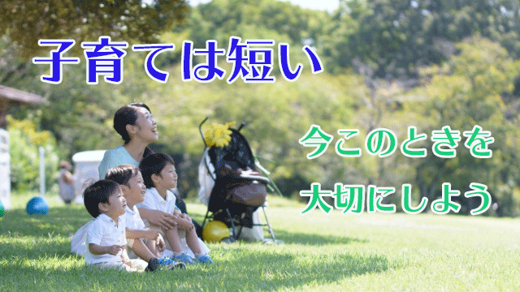

失ってみて初めてその大切さに気づくってことがありますね。
愛する人を失って初めて2人で過ごした時間がどれだけ貴重だったかとか、家族や大切な人を失ってから「もっと優しくしておけば良かった」など、そのときは気づけなかった宝物の存在を改めて思い知るような経験。
同じようなことは親子の間でもあります。
たとえば私には5人の子どもがいますが、成人して手がかからなくなると彼らの幼い頃の様子が妙に思い浮かびます。
たいていは幼児のころや幼稚園児～小学校低学年のころですね。
泣いたり喚いたりヤンチャして手がかかる。そんな時期は親も「早く大きくなって楽させてくれよ！」と疲れと不満を感じていたのに、いざ手がかからない年齢になるとナゼかあの頃がなつかしい。
そして後悔と共に思うのは「もっとあのときを楽しめば良かった」という感想です。
この前私と妻で大学生になった子どもたちについて話していたとき、私が「つい最近までガキンチョであちこち走り回っていたのに…」と言うと妻が「あの頃の2人にいまもう一度会ってみたい…」となつかしそうに言います。
当時あんなにもヒステリックに子どもたちを追い回していたのに今ごろなつかしんでるのかよ…とツッコミたくなりましたが、実は私も同じ思いだったのです。
子どもというのはあっという間に大人になります。子育ての時間は親が考える以上に短い。このことは強調しておきたいと思います。
貴重な「子ども時代」を失って初めて親はそれがどれほど輝かしい時間であったか知るのです。
私の感想は「もっともっと子どもたちとの時間を愛し楽しむべきだった」です。
それなのに心配や不安、気疲れや叱り事ばかりだった気がするのです。
これは多くの親にとっても似たようなものだと思います。
特に学校に通うようになると成績や、入試、他人と比較しての焦りや将来への不安だとか「いまここ」の子どもたちとの大切な時間を見過ごし続けます。
私たちはいつも過去への後悔と未来の不安で忙しく、いまここでの貴重な瞬間を見逃しています。大切な人との時間、二度と帰らぬ子ども時代、その一瞬一瞬は平凡な日常の連続に過ぎないけれど、だからこそ私たちは見逃さないよう「今」を味わうことを心がけたいものです。
たとえいま子どもの世話に明け暮れ子どもの行状に振り回されていても、そして心配や不安、焦りに駆られていても少し立ち止まってしばし頭のざわめきを静めてみましょう。いま子どもといるこのひとときを感じてみましょう。
そして「これもやがて過ぎ去る」と心の中で唱えてみましょう。不思議な感覚に包まれるかも知れません。
それは未来のあなたからの声かもしれません。
あなたとあなたの子どもの「今」を大切に。
◇◇◇◇◇◇◇◇◇◇◇◇◇◇◇◇◇◇◇◇◇◇◇◇◇◇◇◇
長老カフェ「ぶっちゃけ教育トーク」第3回を公開しました！
テーマは「良い学校→良い会社→幸せ？」
是非ご視聴ください。